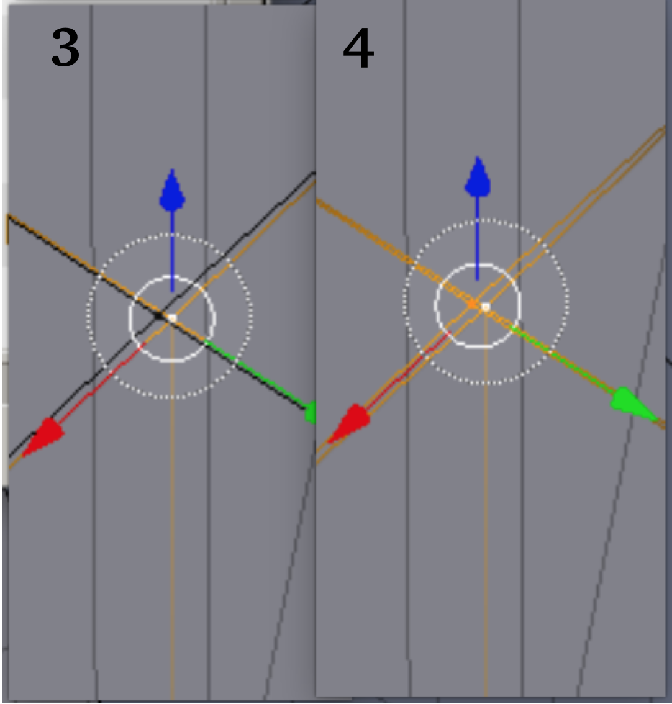
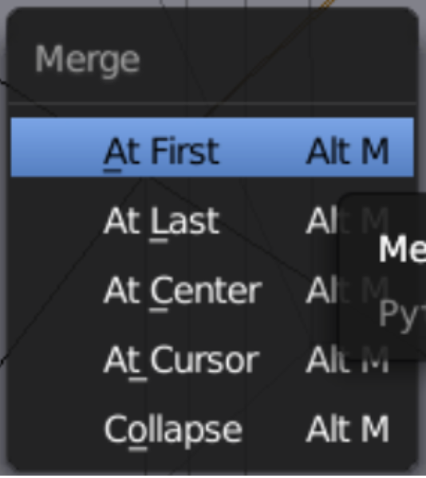
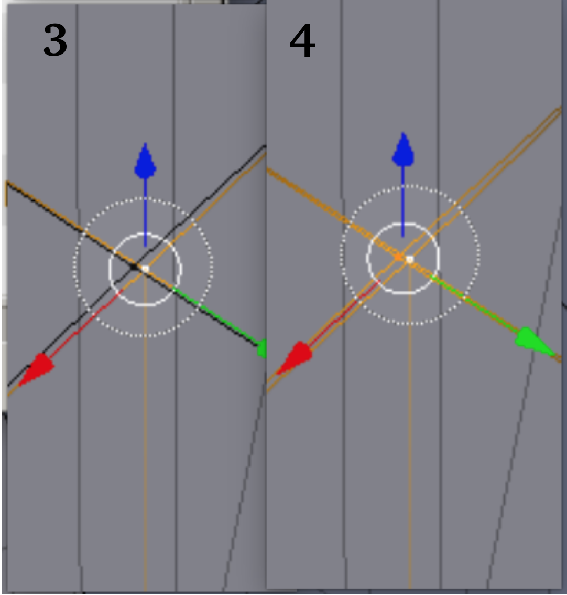
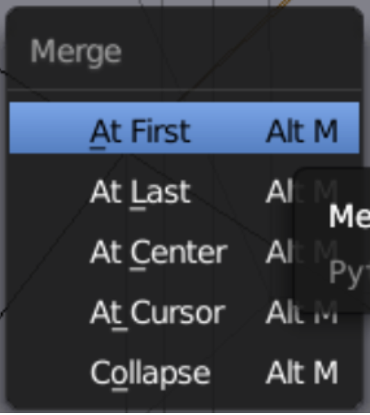

Demo 5
After demo5.ply fails to convert, the .ply is opened in Paraview. All the points have multiple superimposed labels, indicating that the operator forgot to uncheck the export options check boxes in Blender’s export dialog.
After demo5.ply fails to convert, the .ply is opened in Paraview. All the points have multiple superimposed labels, indicating that the operator forgot to uncheck the export options check boxes in Blender’s export dialog.
At right is shown a proto-block, and below it a test mesh, from IA-FEMesh. The wrangling of lattice blocks for the generation of non-organic shapes in IA-FEMesh is apparently an arcane science. A starting shape is supplied in the demo files under the name 'demo5'. The user of IA-FEMesh must exercise extreme care in positioning the lattice block precisely if regular-looking edges and corners are to be obtained.
The basic Blender Merge procedure has better control than 'Remove Doubles'. Pic 1: in inspecting a zoomed view, an undesirable doubles situation is seen. Pic 2: The desired base locus is selected. Pic 3: 'c' key invokes a selection circle, which is scrolled to the desired size and positioned to target a cylindrical volume for the merge. Pic 4: after the selection click the points all light up. This is followed by the dismissal click, releasing the selection circle. Below left: then Alt+'m' brings up the merge menu, and the 'a' key does the merge. In this procedure, it is not necessary to know the number of points involved or their exact location.
 



It might be of interest to look at Vtk winding order. As shown, we may have 0-1-2-3 on one face, then slide back along the edge where we started to pick up the opposite face, 4-5-6-7. Since, looking at the outside surface of the faces, one face is wound clockwise and its opposite wound counter-clockwise, it doesn't matter for a given face whether the external numbering is ccw or cw, so long as it follows the assignment system just described.
Thus, the element might appear in the .vtk files as 8 0 1 2 3 4 5 6 7
or 8 2 6 5 1 3 7 4 0
or any one of 46 other possibilities.